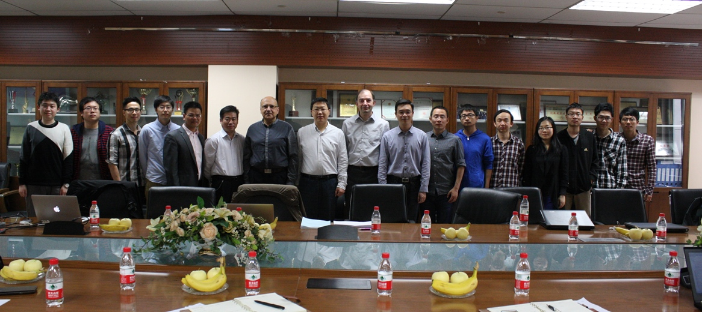
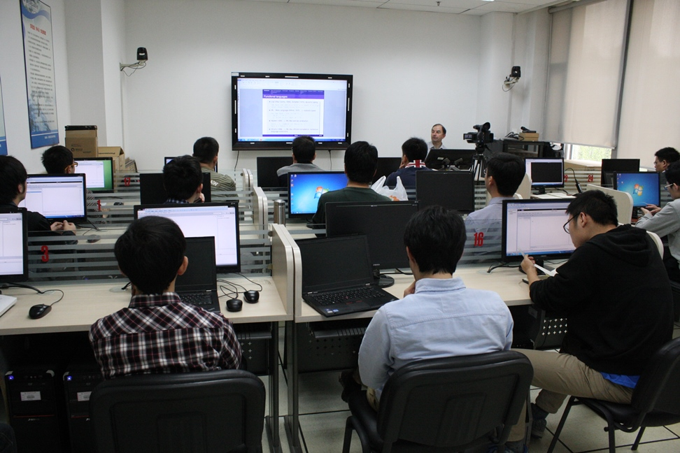
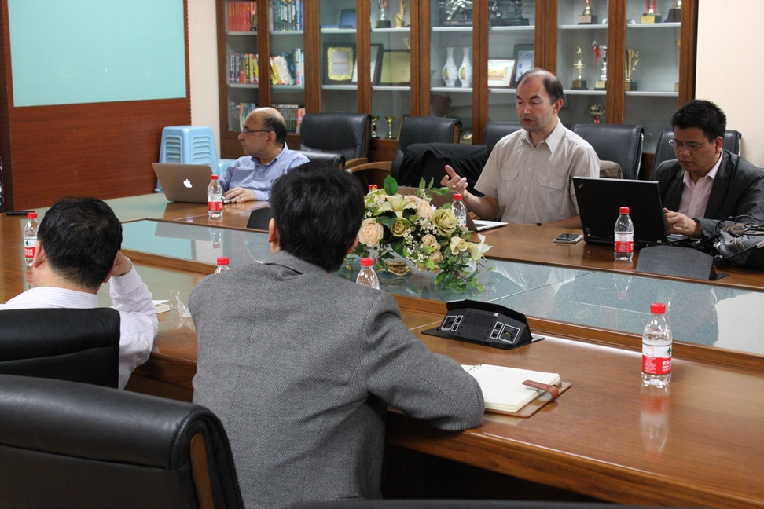
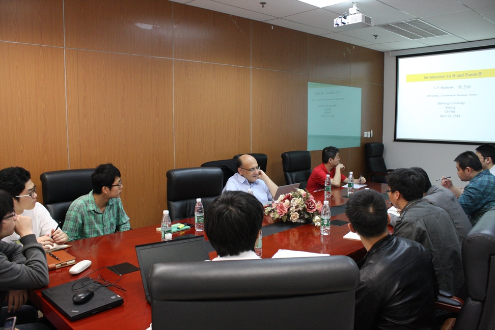

本人在“北航聘请短期外国专家重点项目”的资助下，邀请法国图卢兹大学计算机信息研究所（IRIT）安全关键实时系统专家Mamoun Filali教授和Jean-Paul Bodeveix教授， 于2014年4月14日-24日来校进行为期两周的访问讲学，并在软件开发环境国家重点实验室开展研究工作。并为北航师生开设了为期两周的“安全关键实时系统系列讲座”，包括3个学术报告和1门开放课程。
14日上午，计算机学院举行了“安全关键实时系统系列讲座”的启动仪式，计算机学院吕卫锋院长出席并致欢迎辞， 随后Mamoun教授介绍了图卢兹大学IRIT研究所的基本情况和学术方向，并为师生做了“On Tool Qualification: Application to Synchronous Language Compilers”的学术报告。 报告认为ESTEREL、LUSTRE、QUARTZ、SIGNAL等同步语言是安全关键领域嵌入式系统形式化开发的重要方法。 本报告首先介绍DO-178C基本的认证过程，然后重点介绍同步语言编译的验证，包括顺序代码生成和多核代码生成。

4月15日-18日，上午9:00-11:30，专家在新主楼F218电教室开设“Introduction to functional languages: the OCAML language（函数式程序设计语言：OCAML）”开放课程。 本课程主要通过OCAML来讲解函数式程序设计语言。首先，简要概述函数式程序设计语言，然后介绍OCAML语言的基本函数式概念， 包括基本类型、表达式、环境、声明、强静态多态、类型合成、递归、高阶编程、模块化编程、异常处理。每种概念将结合一些基本例子来讲解。 课程案例主要涵盖编程语言的语义和证据理论。该课程通过内容讲解和上机实践相结合的方式开展，共4次，每次2.5小时，包括1小时讲解和1.5小时的上机实践。 共有近20名师生参加了该课程的学习。

21日上午，法国专家为师生做了“Introduction to the proof assistant Coq”的学术报告。

23日上午，法国专家为师生做了“Introduction to the B method”的学术报告。
